The global energy storage market stands at a historic inflection point. The Battery Energy Storage System (BESS) market is projected to expand from USD 81.6 billion in 2026 to USD 195 billion by 2036 at a 9.1% CAGR, while energy storage revenues broadly are poised to surge from USD 14 billion in 2024 to USD 184 billion by 2035. Yet this headline growth conceals a brutal truth: not all layers of the energy storage industry chain will profit equally. A raging price war, commoditization pressure, and a shifting value center are separating the industries' long-term winners from its short-term survivors.

Who "Profits" more?
- High-quality cash flow and sustainability: EMS (Energy Management System) / platform software and operations and maintenance (O&M) have high gross margins and stable cash flow due to subscriptions, services and data stickiness.
- Scale and Manufacturing Dividends: Cells have the largest revenue volume, but their gross profit margin is strongly driven by raw material and price cycles, requiring leading capacity, yield, and cost curves.
- System and Integration Value: Pack/System Integration achieves medium gross margins and strong bargaining power through security, grid connection, and delivery capabilities.
- Engineering with low profit margins but high turnover: EPC (Engineering, Procurement, and Construction) has the lowest profit margin but fast turnover and succeeds by relying on standardization and supply chain control.
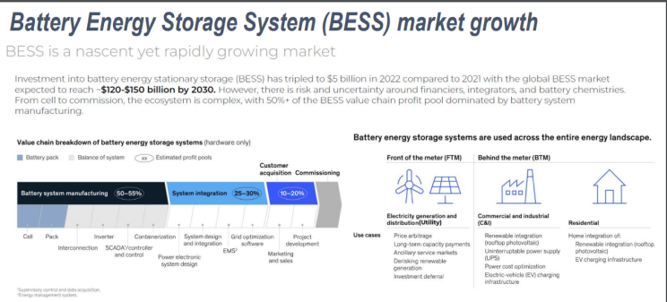
The Energy Storage Industry Chain: A Map of Value
The energy storage industry chain runs from upstream raw materials and cell chemistry through to the end customer's operating asset. Each layer extracts value differently, and each face distinct competitive dynamics:
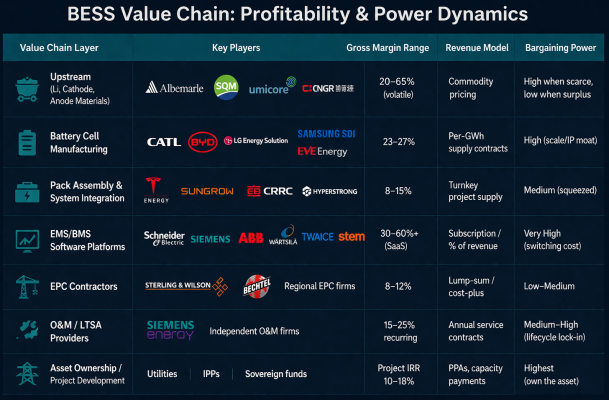
Gross Profit Margin Range, Cash Flow Characteristics, and Bargaining Power at Each Stage
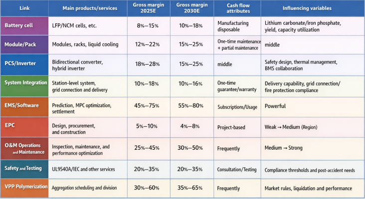
Bargaining Power Model: Five-Factor Quantitative Scoring
Cost Structure and Price Elasticity
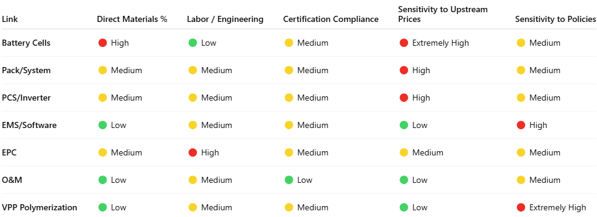
Conclusion: EMS/O&M is less sensitive to bulk material prices and is more resistant to economic cycles; battery cells/PCS need to hedge against price declines by focusing on scale and efficiency.
The "Underlying Formula" of LCOS and Profit
Levelized Cost of Electricity (LCOS)
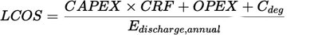
in CRFCRF stands for Capital Recovery Factor.CdegC_{deg} C d e g represents aging provision. The lower the LCOS, the greater the bargaining power for system integration.
Gross profit margin (GM) and net profit margin (NM)
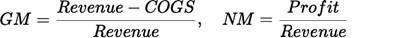
Software/service GM is high, but customer acquisition cost and fulfillment cost need to be considered.
In-Depth Analysis of each Stage and Trend Judgment
Battery Cell: Battery cell manufacturing has delivered the industry's most visible profit story. CATL , the world's largest battery maker, posted a record net profit of RMB 72.2 billion (USD 10.4 billion) in 2025, a staggering 42.3% year-on-year increase. CATL's energy storage battery division was the star performer, achieving a 26.71% gross margin — actually higher than its power battery segment (23.84%). The company shipped 121 GWh of energy storage batteries in 2025, up 29.13% year-on-year, maintaining the global #1 position in energy storage battery shipments for five consecutive years.
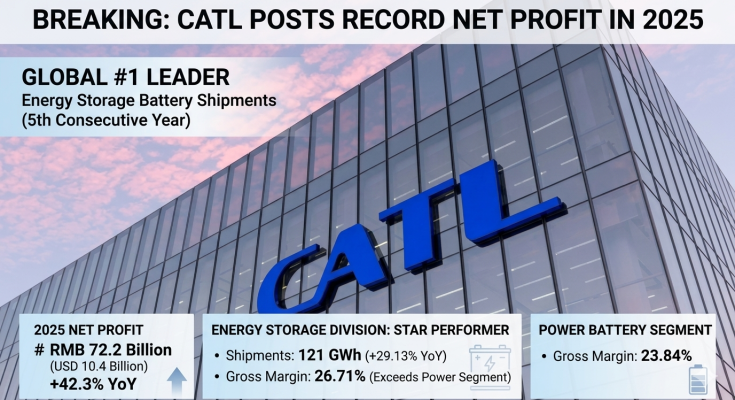
At the industry level, global energy storage cell shipments reached 410.45 GWh in Q1–Q3 2025 alone, up 98.5% year-on-year — reflecting explosive demand. Battery manufacturing plants typically run gross margins of 25–30% and net profits of 8–12%.
- Driving factors: material price, energy density, safety, and process (coating/lamination/composition capacity).
- Trends: LFP and LMFP are gaining a larger share in energy storage; high- nickel NCM is increasingly targeting automotive applications. Leading companies are achieving "high turnover with low profit margins" by leveraging large-scale procurement and leading yield rates.
Pack/System: The system integration layer has undergone a structural power shift. Vertically integrated cell-to-system players CATL BYD once dominated this segment, peaking at over 40% combined BESS market share in 2023. By H1 2025, their combined share had fallen to under 30%. The beneficiaries were pure-play integrators: Sungrow grew from 10% global market share in 2023 to 14% in 2024, and the combined share of Sungrow, CRRC, and HyperStrong rose from 20% (2023) to 30% (H1 2025). Tesla Energy remains the top global integrator overall and dominates North America with a 39% share.
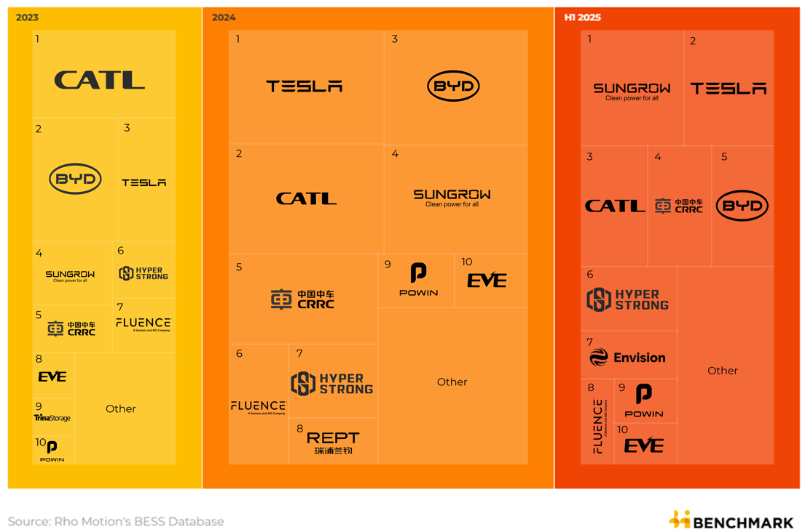
Integrators that win in the next five years will not compete on hardware price. They will win on Software-defined systems, Standardization and delivery speed, multi-revenue-stack enablement, and Service bundling. BESS manufacturing setups in India can achieve IRR of 13–17% with payback periods of 5–8 years for assembly-focused plants — viable but requiring tight cost discipline and government support (PLI schemes).
- Value proposition: Thermal safety (liquid cooling/heat propagation prevention), high integration, fire protection compliance, and station- level architecture.
- Trend: Standardized racks, factory prefabrication + on-site assembly shorten delivery cycles and keep gross profit margins stable in the median range.
PCS/Inverter
- Value proposition: High conversion efficiency, grid compatibility (such as anti-islanding, FRT), reliability, and safety features such as AFCI.
- Trend: SiC penetration is increasing power density and efficiency, while the price center is slowly shifting downwards, with technology and certification stabilizing profit margins.
System Integration
- Value proposition : Integrated solutions, addressing the "last mile" issues of grid connection, fire protection, and acceptance testing, and cross- disciplinary project management.
- Trend: Leading companies leverage their delivery reputation and regional networks to enhance their bargaining power, but the industry's gross profit margin is suppressed by the "competitive bidding system".
EMS/Software: If there is one segment set to deliver outsized profits in the energy storage industry chain over the next five years, it is Energy Management Systems (EMS) and intelligent battery software platforms. The EMS segment specifically focused on energy storage is estimated at USD 15 billion in 2025, projected to grow at 12% CAGR to reach USD 45 billion by 2033.
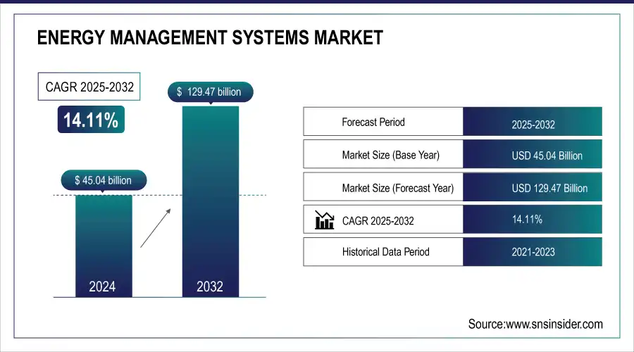
Industry leaders have explicitly identified software as the strategic frontier. Wärtsilä VP of Software Engineering described 2025 as the year "the industry is finally embracing that software is a core enabler of the energy transition, necessary to intelligently manage a diverse array of energy assets on a grid with high renewable penetration." For 2026, the focus is on resiliency at the edge — intelligent energy systems for data centres, microgrids, and AI load management.
The leading EMS players — Schneider Electric ABB Honeywell GE Wärtsilä Siemens — are positioned to extract premium recurring margin from an installed base that will grow dramatically over the next five years.
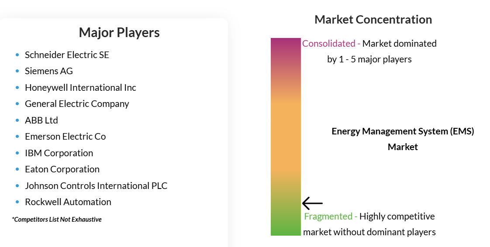
- Value proposition: Forecasting (load/PV/price), MPC optimization, DR/VPP interface, metering settlement and KPI closed loop.
- Trend: Shifting from outright licensing to SaaS subscriptions/revenue sharing, resulting in high gross margins and stable cash flow, becoming a "high-quality profit pool".
EPC: EPC (Engineering, Procurement, and Construction) contractors occupy an essential but structurally squeezed position in the BESS chain. Solar EPC contractor margins currently run 8–12%, and BESS EPC margins track similarly.
Two contracting structures dominate BESS EPC: Full-Wrap (single EPC contractor responsible for everything, preferred by lenders) and Split Contract (principal contracts separately with equipment supplier, construction contractor, and integrator).
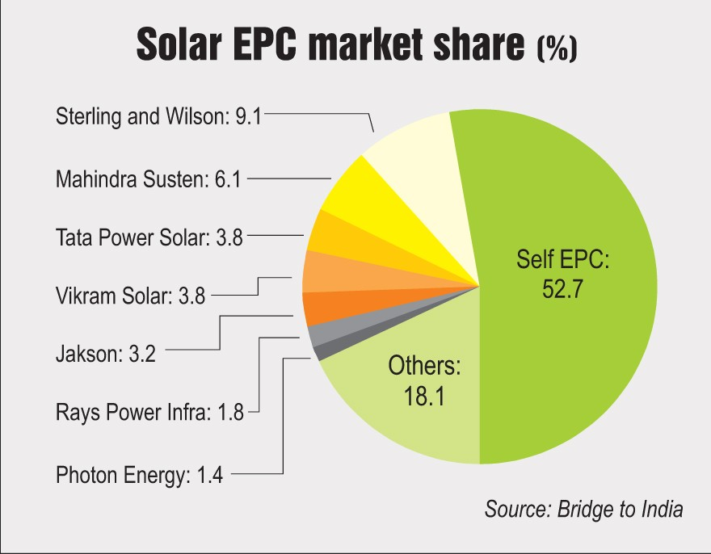
EPC margins are structurally limited unless the contractor can differentiate on technical capability, execution speed, and integrated O&M services. The most profitable EPC firms will be those that build into long-term service agreements from day one, turning a one-time construction fee into an annuity revenue stream. For India specifically, large-scale EPC players such as Sterling and Wilson Renewable Energy , which supports utility-scale BESS with advanced design, manufacturing, and installation, are well positioned to capture the commissioning wave expected through 2026–2027.
- Value proposition: Standardized design, supply chain and schedule control, and on-site safety.
- Trend: Profitability through turnover and scale; reducing costs and increasing turnover through modular design and bulk purchasing.
O&M Operations and Maintenance: Operations and Maintenance (O&M) services are among the most underappreciated profit centers in the energy storage value chain. Annual O&M costs for a commercial BESS typically range from USD 15–25 per kW per year, covering preventive maintenance, remote monitoring, performance guarantees, and parts replacement. Annual maintenance represents only 2–5% of capital investment for BESS, significantly lower than diesel generators at 8–12%.
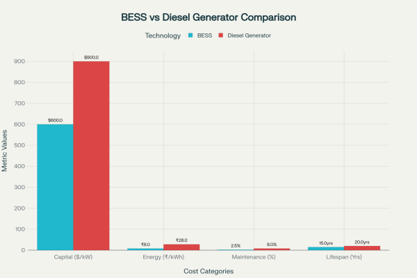
A landmark O&M market study by Siemens Energy (surveying 50+ BESS market participants) found that after initial warranties from EPC contractors, system integrators, or equipment manufacturers expire, owners face "increased challenges to reliability and profit if asset availability declines and operations and maintenance expenses escalate".
For energy storage project owners, outsourcing O&M to an LTSA vendor is "often more cost efficient" than building in-house capability. For O&M service providers, this translates to long-duration recurring revenue contracts tied to the lifecycle of 15–25-year BESS assets. A 1 MW/2 MWh industrial BESS installation with a USD 950,000 investment can generate USD 350,000 in annual revenue through combined services, with annual O&M costs of only USD 23,750 — delivering net annual savings of USD 326,250 and a 2.9-year payback.
- Value proposition: Predictive maintenance, equivalent full cycle (EFC) health management, fire drills, and spare parts pool.
- Trend: With SLAs and availability targets being aligned, the proportion of recurring revenue is increasing, and profits are stabilizing.
VPP polymerization
- Value proposition: Event aggregation, baseline/performance calculation, settlement and revenue sharing.
- Trend: Rules and transparency determine the ceiling; in areas where rules are mature, they become "amplifiers".
The Profit Map: Comparative Analysis Across the Chain
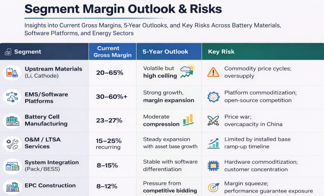
Strategic Recommendations by Player Type
For Battery Cell Manufacturers
- Differentiate on chemistry (solid-state, sodium-ion, LFP variants) rather than competing on price alone; CATL's energy storage gross margin of 26.71% is sustainable only with technology leadership.
- Expand into system integration and software — CATL, BYD, and LG ES must follow Tesla's model of owning the integrated hardware-software stack.
- Develop direct service relationships via LTSAs to capture O&M revenue and insulate from spot-market price volatility.
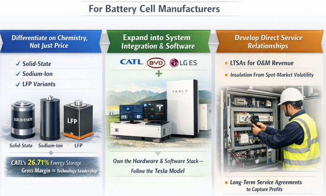
For System Integrators
- Build or acquire EMS/dispatch optimization capability — this is the most urgent strategic imperative; without software, integration is commoditizing.
- Pursue regional market specialization where local knowledge, regulatory expertise, and relationships create defensible positions.
- Develop performance guarantee underwriting capability to capture O&M and LTSA revenue post-commissioning.
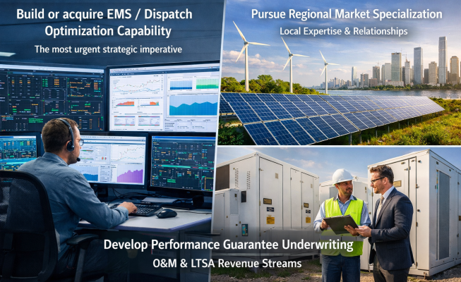
For EMS/Software Providers
- Focus on utility-scale — Wood Mackenzie projects utility-scale storage will capture 86% of the BESS market by 2030, offering the largest addressable market.
- Build interoperability — platforms that work across battery chemistries, inverter brands, and market structures will capture broader installed base.
- Adopt performance-based pricing — subscription models tied to incremental revenue generated by the platform align incentives and justify premium pricing.
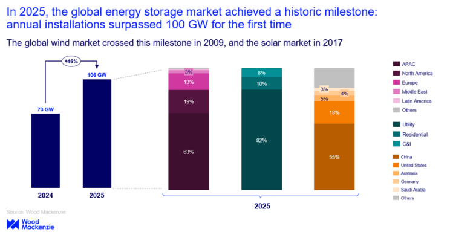
For EPC Contractors
- Move toward hybrid EPC + LTSA models — integrate long-term performance guarantees and O&M service agreements into project bids from the outset.
- Develop digital project delivery capability (BIM, digital twins, remote commissioning) to accelerate deployment timelines.
- Specialize in complex integration environments — co-located solar + BESS + grid-forming inverters is technically demanding enough to sustain 12–15% margins.
For Asset Owners and Developers
- Revenue stack from day one — design BESS assets for multi-market participation (energy arbitrage + ancillary services + capacity payments).
- Select software partners carefully — the EMS platform will determine 30–50% of lifetime returns; this is not a commodity decision.
- Hedge tariff and regulatory risk — as demonstrated by Zhejiang's price adjustment that cut profits 40%, single-tariff dependence is fatal.
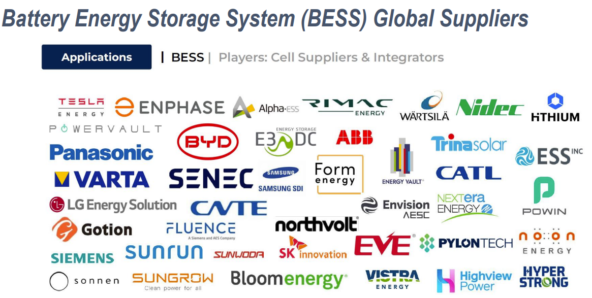
For Investors
- Overweight EMS/software: SaaS-model energy storage software offers the best combination of margin, scalability, capital efficiency, and customer stickiness in the chain.
- Consider second-life battery specialists: USD 1.6B market growing at 28.4% CAGR with strong regulatory tailwinds in the EU.
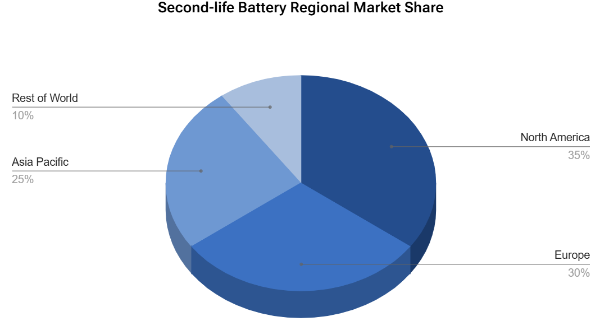
- Monitor O&M roll-up opportunities: as the installed base of BESS assets grows from hundreds of MWh to hundreds of GWh globally, O&M service aggregators become highly valuable.
India-Specific Opportunity Map
India's BESS market is unique in its policy tailwinds, scale ambition, and timing advantage. Key metrics:
- India BESS market: USD 2.19 billion (2025) → USD 19.45 billion by 2035 at 24.3% CAGR
- National requirement: at least 42 GW / 208 GWh of BESS by 2030 (RMI)
- NEP projection: 47.24 GW / 236.22 GWh of BESS by FY 2031–32
- India's BESS market as of early 2025: only 219 MWh operational, but 95 GWh in execution pipeline
- Hybrid renewable + BESS tenders: share rose from 12% (2021) to 49% (2024) of all RE tenders
- Government support: PLI schemes, Viability Gap Funding (VGF) covering up to 40% of CAPEX, transmission charge waivers until June 2028
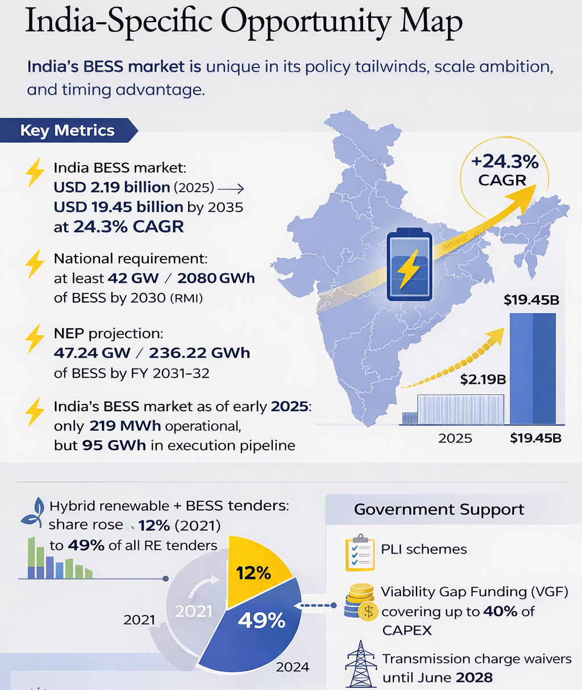
The Indian opportunity across the value chain differs from China's in critical ways. China competes on cell manufacturing scale; India's near-term advantage lies in EPC, system integration, EMS localization, and O&M services for the domestic market. Locally manufactured battery packs (including BESS assembly as being scaled by companies like Semco Infratech and others) can leverage PLI incentives while avoiding the full brunt of Chinese price war dynamics.
Budget 2026 proposals identify midstream battery components — cathode and anode materials, battery materials manufacturing — as the next critical intervention in India's PLI strategy. This positions India to begin capturing higher-margin segments of the chain over 5–7 years.

Conclusion: The Profit Map for 2026–2031
The energy storage industry is entering its "solar module moment" — the phase described by McKinsey where hardware cost declines force an industry-wide restructuring, compressing margins for undifferentiated players while rewarding those who have built value in intelligence, services, and operational excellence.

The profit leadership over the next five years will not belong to whoever manufactures the most battery cells — it will belong to whoever controls the intelligence layer of the energy storage asset. EMS and software platforms will capture the highest margins in the chain, driven by subscription economics, switching costs, and the extraordinary leverage their algorithms create on project returns. O&M and lifecycle service providers will build the industry's most durable annuity businesses. Cell manufacturers with scale and chemistry leadership (CATL, BYD) will remain profitable but face steady margin pressure.
The ultimate winner in any value chain is the player who captures the most irreplaceable value in the fewest square meters of footprint. In energy storage in 2026–2031, that player is the one who makes a 100 MWh battery think more profitably than its competitor — not the one who makes it cheaper.